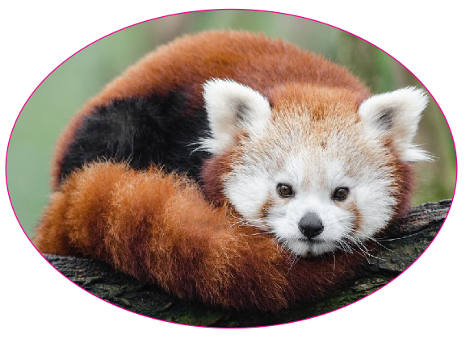

In this rotation we did vinyl cutting and CNC milling. I made a vinyl sticker of a hibiscus flower, which I wanted to put on my computer, however it did not stick properly and ended up ruined. The other thing I made this rotation was a mold of a honeycomb, which worked out far better. I also made some regular stickers that haven't been put on anything yet.
